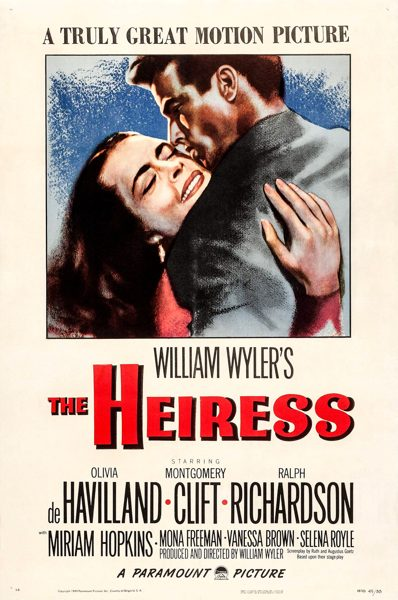

The Heiress

Starring: Olivia de Havilland, Montgomery Clift, Ralph Richardson
Director: William Wyler
Writer: Henry James
Producer: William Wyler
The Heiress is a 1949 American romantic drama film directed and produced by William Wyler, from a screenplay written by Ruth and Augustus Goetz, adapted from their 1947 stage play of the same title, which was itself adapted from Henry James' 1880 novel Washington Square.
Trivia
- Won the Academy Award for Best Actress.
- Won the Academy Award for Best Costume Design, Black-and-White.
- Won the Academy Award for Best Art Direction, Black and White.
- Won the Academy Award for Best Original Dramatic or Comedy Score.
- Won the Golden Globe Award for Best Actress – Motion Picture Drama.
- Won the National Board of Review Award for Best Actor.
- Selected for the National Board of Review: Top Ten Films.
- Also nominated for: Academy Award for Best Supporting Actor; Academy Award for Best Director; Academy Award for Best Cinematography, Black-and-White; Academy Award for Best Picture; and 2 more.
- Based on Washington Square (1880 romantic bildungsroman by Henry James).
- Based on The Heiress (1947 play by Ruth and Augustus Goetz).
- After seeing The Heiress on Broadway, Olivia de Havilland approached William Wyler about directing her in a screen adaptation of the play.
- The couple were asked to make Morris less of a villain than he was in their play and the original novel in deference to the studio's desire to capitalize on Montgomery Clift's reputation as a romantic leading man.
- The film premiered at Radio City Music Hall in New York City on October 6, 1949.
Previous Showings
4 Runs • 2 Festivals
Original Billings: 1 run (January 14, 1950)
Original Run: January 14, 1950 (Saturday - Saturday)
All runs on record (4):
- January 14, 1950 (Saturday - Saturday)Olivia de Havilland, Montgomery Clift
- June 10 - 11, 1995w/ Our Town
- May 27 - 29, 2016Olivia de Havillandw/ The Snake Pit
- August 28 - 30, 2019Summer 2019w/ The Dark Mirror